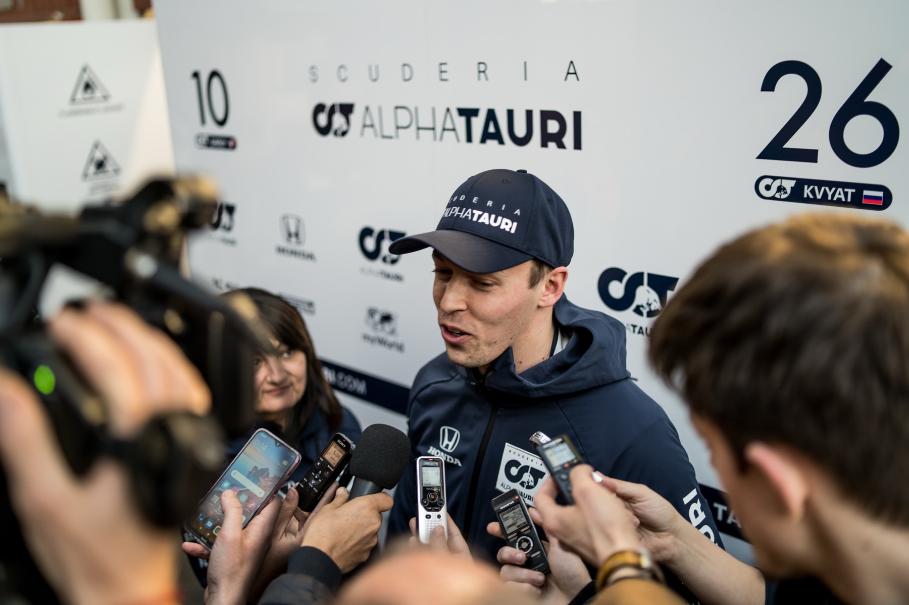
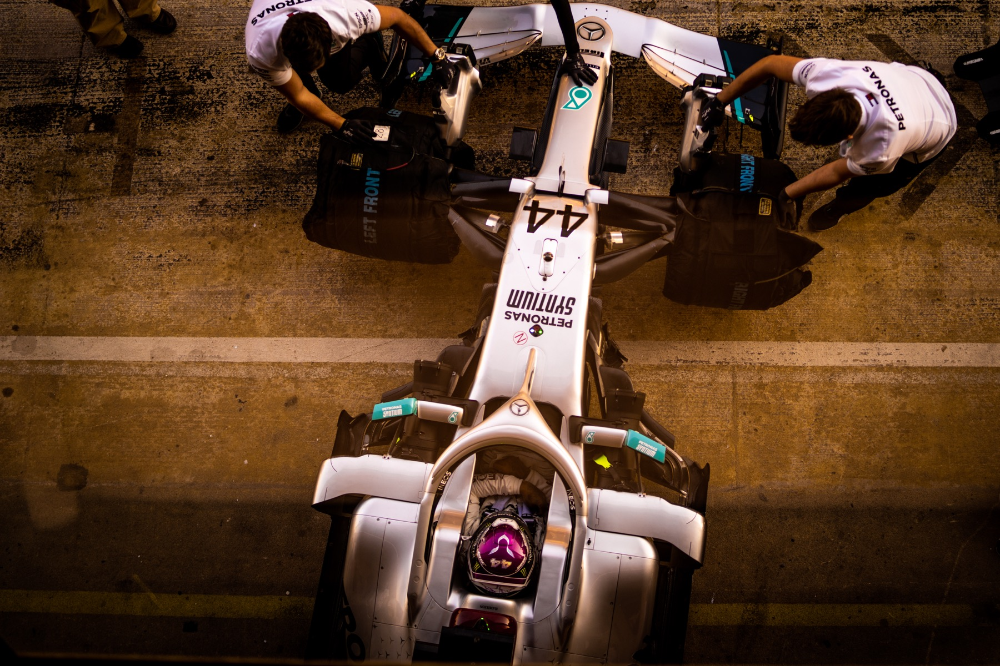

Cliente · Motorsport
Accesso FIA-accreditato a paddock e pit lane al Circuit de Barcelona-Catalunya, 2021 — realizzato in collaborazione con Formula Racer, con un focus sul dettaglio tecnico e aerodinamico.
Questa copertura è stata realizzata in collaborazione con Formula Racer, con accredito FIA per paddock e pit lane. Il focus è rimasto sul lato tecnico e aerodinamico delle vetture — appendici aerodinamiche, sviluppo del fondo, bargeboard, diffusore, halo — il dettaglio raramente visibile da un punto di vista da spettatore generico.
Oltre al dettaglio tecnico, l'accesso ha coperto anche il paddock, la pit lane e l'ambiente circostante di un weekend di Formula 1 — Francesco la descrive come una delle esperienze professionali personalmente più significative.


Per team e brand che hanno bisogno di una fotografia motorsport tecnica, a livello di accredito.
Inizia un progetto